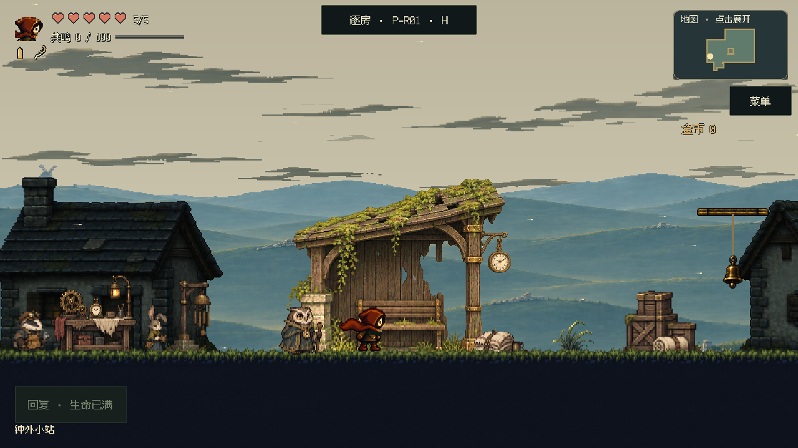
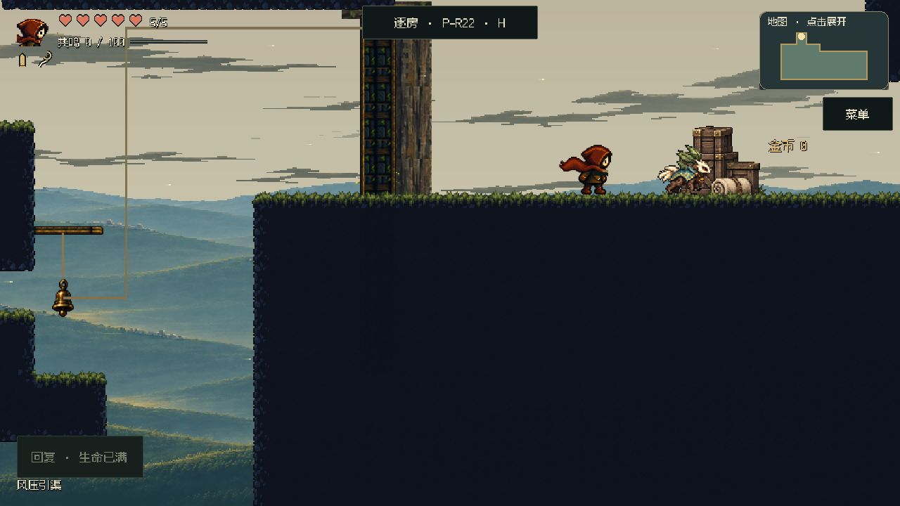
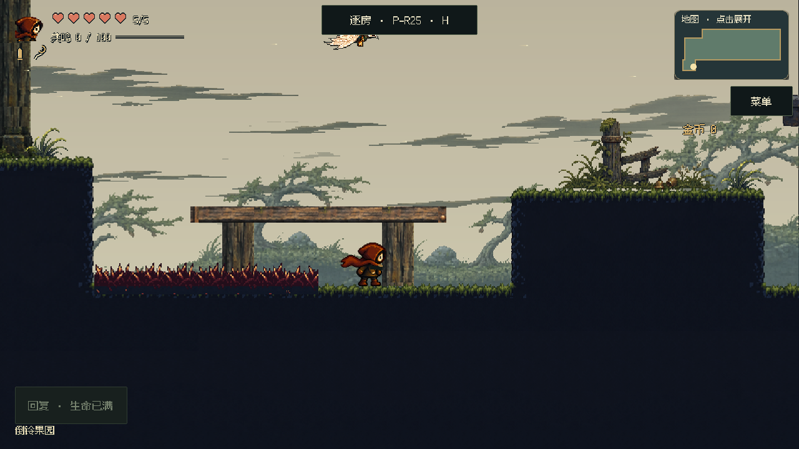
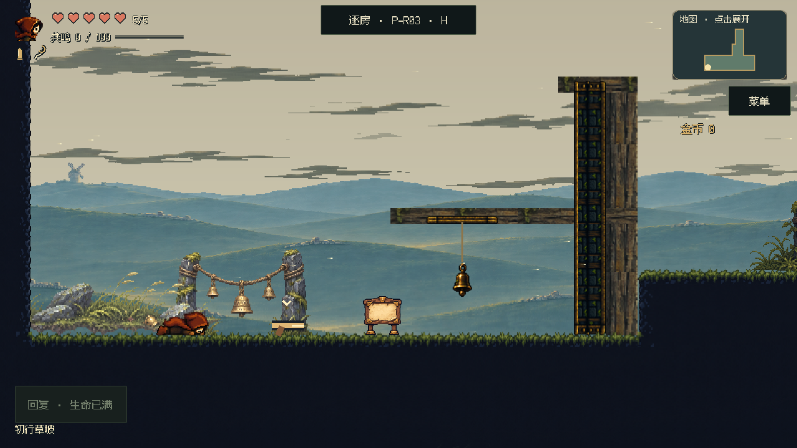
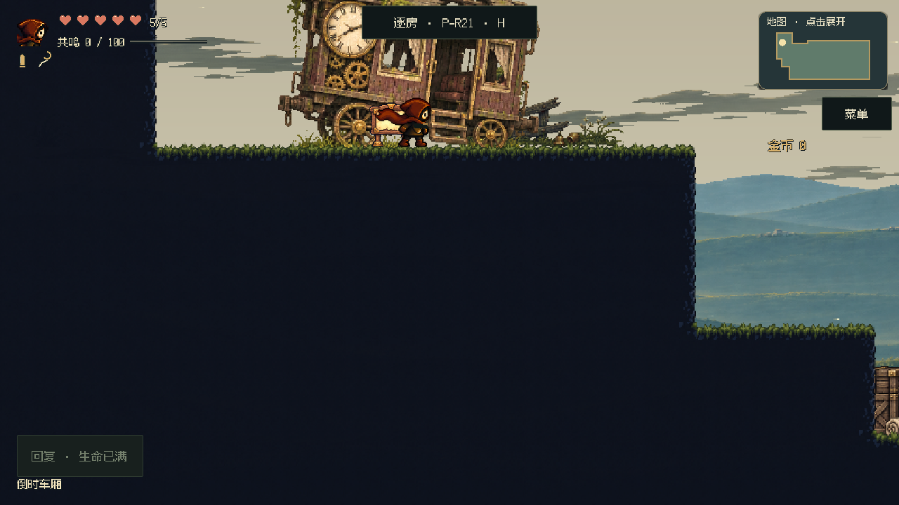
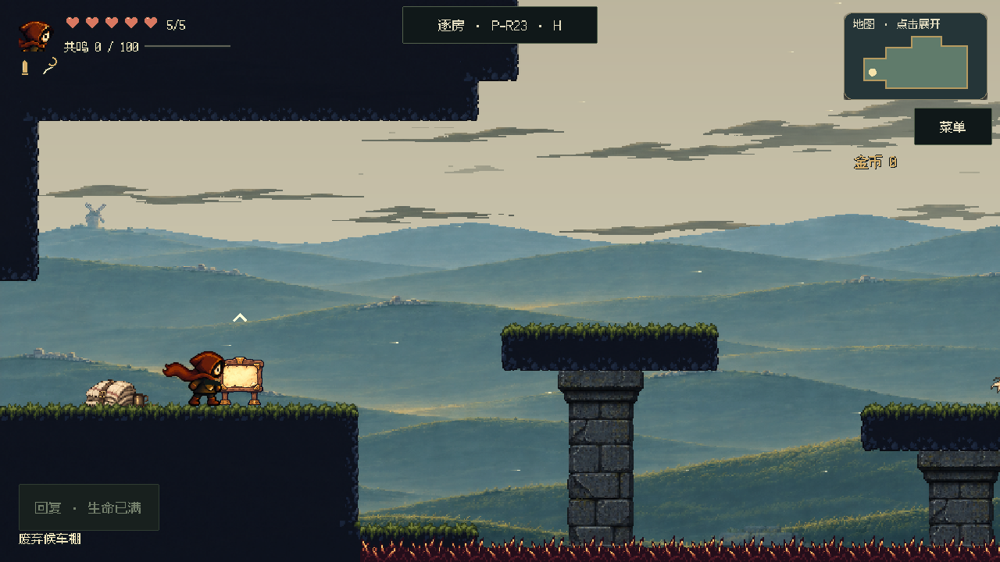
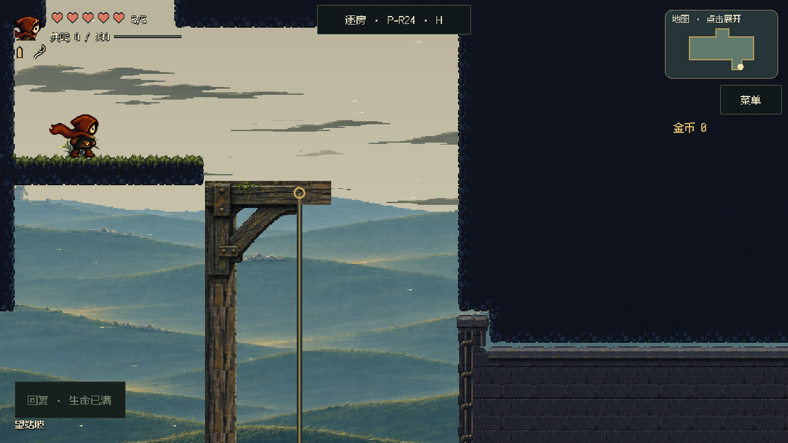

失序之钟 · 正式主游戏 · fed074bcf422
初行草坡到钟外小站
整屏构图、平台接缝、疏落旧镇、动物居民和独立云层。
路线：P03 → P21 → P22 → P23 → P24 → P01。小站删除下层夹道，保留必要升降井；其余清理重叠平台时保留外露可走轮廓。关卡审核平台未部署，人工审批签名未改动。
每房有可切换取景、改前／新版按钮和正常速度短片。短片约4–9秒，包含游戏原声，可单独下载。P01的街道与镜头已按反馈调整，同玩家位置的前后构图会不同。
P01 · 钟外小站
连续主街、疏落旧屋、动物居民；镜头抬高展示地标。保留到站剧情和两段升降。

正常速度 · 8.7秒 · 2.69 MiB
下载这段短片
P22 · 风压引渠
大岸、普通平台和门岸恢复平原tile；删除重复平台并裁掉入墙体积。

正常速度 · 3.6秒 · 0.83 MiB
下载这段短片
P25 · 倒铃果园
木柱接到可见梁底，入口木台在岸面结束；外露落脚面与高处奖励保留。

正常速度 · 5.3秒 · 1.08 MiB
下载这段短片
P03 · 初行草坡
安静苏醒坡→射铃开门→台阶战斗，远山与旧路构件统一。

正常速度 · 7.4秒 · 1.23 MiB
下载这段短片
P21 · 倒时车厢
遗留车厢解释道路，落地梁架和低远景衬托射击穿越。

正常速度 · 5.0秒 · 1.07 MiB
下载这段短片
P23 · 废弃候车棚
交错反冲平台以石脚和木撑解释承载，危险与落点保持清楚。

正常速度 · 5.0秒 · 1.33 MiB
下载这段短片
P24 · 望站坡
通风后廊、紧凑守卫场与升降框架；暗室用匹配净空的封闭背墙。

正常速度 · 7.0秒 · 2.50 MiB
下载这段短片
全局居民与云层
回收匠：獾；织时匠：长耳兔；武器匠：野猪；守钟匠：猫头鹰；旅人：狐狸。场景、剧情人物和对话头像同步，保留原服务与保存身份。下面为原生动画图集，四帧待机、两帧招呼。
獾回收匠
长耳兔织时匠
野猪武器匠
猫头鹰守钟匠
狐狸旅人
室外天空底色、双层流云、固定山体／塔景分别绘制。云缓慢漂移、错层变化，经过塔后方；暂停时冻结。小站背景房屋降低对比，玩法层居民保持可读。
检查与边界
已运行日常CI、七房门口／恢复合同、平台无重叠与统一材质检查、到站教学与主街往返、下穿井口、载台承载、教程反冲及波次、果园高奖、武器匠对话；动物逐帧脚底、云层实际像素移动和暂停恢复已复验。
截图使用正式镜头，敌人冻结在原位。短片使用声明的局部起点，普通怪物隔离；P24保留真实波次战斗。它们用于检查本次修改，不代表完整新档通关、全区平衡或实体手机帧率已验证。
美术技能已精简为整屏构图、可见接缝、景深归属与真实动作审看；没有把房号和修改历史写进技能。
下载本项目更新后的美术技能
这是仓库内技能版本；未声称同步到其他会话已安装的云技能。